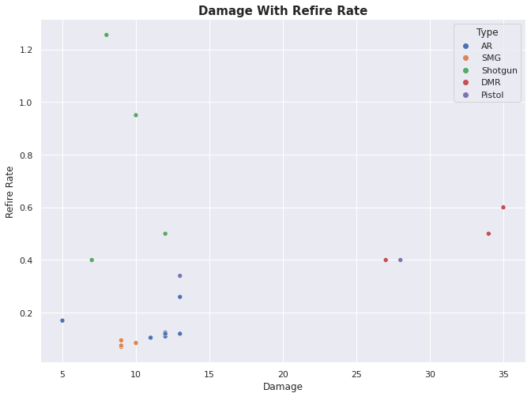
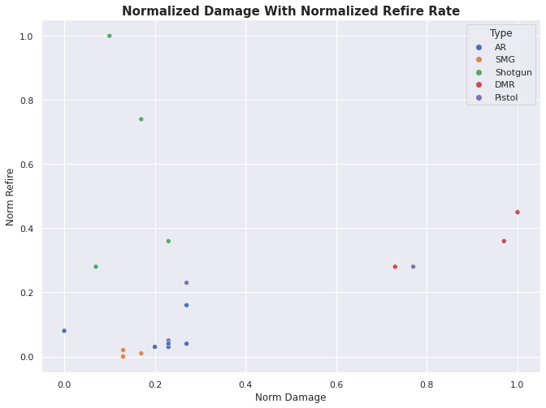
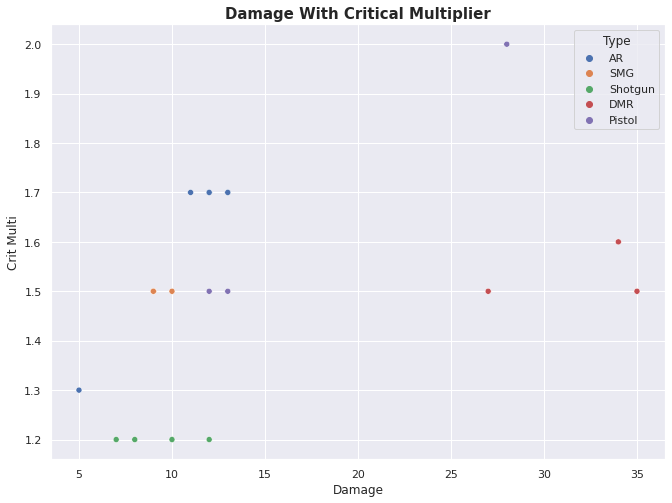

import pandas as pd # for the data.
import numpy as np # for a NaN type
import matplotlib.pyplot as plt # For plotting, and some customization of plots.
import seaborn as sns # For pretty plots.
# Fix the size of the graphs
sns.set(rc={"figure.figsize":(11, 8)})Let’s Start At the Beginning
Recently, I’ve been playing as much The Cycle: Frontier as I can reasonably fit into my days along with getting work and projects done. If you’re not familiar, it’s a First Person Shooter game which focuses around dropping you to a planet in a semi-persistent world with loot and other players. The Station has some Corporations which hand out jobs as a pretty thin attempt to get you down to the planet. While down there, other players - who are not on your team - can decide how they want to deal with you: talk to you, lie to you, kill you, help you. I’ve heard these games be called both Looter Shooters as well as Evac Shooters and I’m admittidly not the biggest fan of these names.
As you build reputation with the different Corps on the Station you can unlock the ability to purchase weapons that each specializes in. Some of them are pretty fun and others are kind of terrible. Today we’re going to do part of the process which was inspired by this article by Robert Ritz. In it, he goes over how to setup an automated Data Pipeline using Kaggle and Deepnote together. This part is going to be simply getting the data downloaded, cleaned and some observations about the guns in this game. I still need to do some more investigation about Deepnote - namely the price, utility and such before actually commiting to that part; I should be able to simply cut that part out and do the download/upload to Kaggle from one of my own servers but if it works then I’m going to use it.
Scraping and Cleaning Cycle Data
To start with, if you’re following along, scraping data from the Cycle’s Wiki page is annoying. There are tables inserted inside the tables which caused quite a problem while trying to simply pull the data from the website. So, if you’re going to us this as the basis for your own tools then beware that you’ll be certain to need to do some custom work. We’ll start with the normal imports for a project like this.
The website we’re going to be using for the data is their official wiki page - which can be found here. We’ll be pulling from the weapons page which luckily contains a table of all the guns without having to join them. Pandas allows you to read html off a website and will attempt to pull any tables it finds on the webpage. Sadly, due to the nested tables and the way the tables are tagged this simply doesn’t work here. But, you can ask pd.read_html() to look for an attribute and then pull the data from the page using that; it will still need to end up as a table though otherwise pandas will reject it. After doing quite a bit of exploration, I found that you can pull the total table with the attribute zebra as that is the only table which uses it.
url = "https://thecyclefrontier.wiki/wiki/Weapons"
site = pd.read_html(url, attrs={"class":"zebra"})[0]site.head()| Image | Name | Type | Ammo | Faction | Buy Price | Sell Value | Rarity | Weight | Crit Multi | Damage | Pen | Mag Size | Refire Rate | RPM | Reload Time | Move Speed | Proj. Speed | |
|---|---|---|---|---|---|---|---|---|---|---|---|---|---|---|---|---|---|---|
| 0 | NaN | Advocate | AR | Medium | ICA | 76000 K-Marks | 22781 K-Marks | Epic | 35.0 | 1.7 | 11.0 | 26.0 | 24.0 | 0.105 | 571.43 | 3.2 | 0.9 | 29000 |
| 1 | 76000.0 | K-Marks | NaN | NaN | NaN | NaN | NaN | NaN | NaN | NaN | NaN | NaN | NaN | NaN | NaN | NaN | NaN | NaN |
| 2 | 22781.0 | K-Marks | NaN | NaN | NaN | NaN | NaN | NaN | NaN | NaN | NaN | NaN | NaN | NaN | NaN | NaN | NaN | NaN |
| 3 | NaN | AR-55 Autorifle | AR | Medium | Station | 1700 K-Marks | 524 K-Marks | Common | 35.0 | 1.7 | 12.0 | 10.0 | 22.0 | 0.110 | 545.45 | 2.7 | 0.9 | 28000 |
| 4 | 1700.0 | K-Marks | NaN | NaN | NaN | NaN | NaN | NaN | NaN | NaN | NaN | NaN | NaN | NaN | NaN | NaN | NaN | NaN |
You can see above that this works but the formatting is still a little messed up. Looking at the tables though, this will be an easy fix since rows which we don’t need contain lots NaN. If you’ve never seen this before it just means Not A Number and is a special value used by numpy for this. So, let’s clean the data for use. You can check a Series for these values using .isna() and then we’ll pass the opposite indexes to pull those out:
data = site[~site.Type.isna()]
data.head()| Image | Name | Type | Ammo | Faction | Buy Price | Sell Value | Rarity | Weight | Crit Multi | Damage | Pen | Mag Size | Refire Rate | RPM | Reload Time | Move Speed | Proj. Speed | |
|---|---|---|---|---|---|---|---|---|---|---|---|---|---|---|---|---|---|---|
| 0 | NaN | Advocate | AR | Medium | ICA | 76000 K-Marks | 22781 K-Marks | Epic | 35.0 | 1.7 | 11.0 | 26.0 | 24.0 | 0.105 | 571.430 | 3.20 | 0.9 | 29000 |
| 3 | NaN | AR-55 Autorifle | AR | Medium | Station | 1700 K-Marks | 524 K-Marks | Common | 35.0 | 1.7 | 12.0 | 10.0 | 22.0 | 0.110 | 545.450 | 2.70 | 0.9 | 28000 |
| 6 | NaN | Asp Flechette Gun | SMG | Light | Osiris | 54000 K-Marks | 16131 K-Marks | Epic | 30.0 | 1.5 | 9.0 | 26.0 | 20.0 | 0.095 | 631.580 | 2.50 | 1.0 | 24000 |
| 9 | NaN | B9 Trenchgun | Shotgun | Shotgun | Station | 1200 K-Marks | 371 K-Marks | Common | 25.0 | 1.2 | 10.0 | 10.0 | 5.0 | 0.950 | 63.158 | 2.40 | 1.0 | 26000 |
| 12 | NaN | Basilisk | DMR | Heavy | Osiris | 275000 K-Marks | 82448 K-Marks | Exotic | 50.0 | 1.6 | 34.0 | 28.0 | 8.0 | 0.500 | 120.000 | 3.85 | 0.8 | 45000 |
Looking much better now. Let’s quickly check the data’s types and make sure they make sense still.
data.info()<class 'pandas.core.frame.DataFrame'>
Int64Index: 26 entries, 0 to 75
Data columns (total 18 columns):
# Column Non-Null Count Dtype
--- ------ -------------- -----
0 Image 0 non-null float64
1 Name 26 non-null object
2 Type 26 non-null object
3 Ammo 26 non-null object
4 Faction 26 non-null object
5 Buy Price 26 non-null object
6 Sell Value 26 non-null object
7 Rarity 26 non-null object
8 Weight 26 non-null float64
9 Crit Multi 26 non-null float64
10 Damage 26 non-null float64
11 Pen 26 non-null float64
12 Mag Size 26 non-null float64
13 Refire Rate 26 non-null float64
14 RPM 26 non-null float64
15 Reload Time 26 non-null float64
16 Move Speed 26 non-null float64
17 Proj. Speed 26 non-null object
dtypes: float64(10), object(8)
memory usage: 3.9+ KBSomething is wrong with the Proj. Speed at this point since it shouldn’t be an object but instead should be a number. Checking the values we find that there are string values in here.
# There is a hitscan in there; how should we deal with that?
data['Proj. Speed'].unique()array(['29000', '28000', '24000', '26000', '45000', '50000', 'Hitscan',
'30000', '60000', '40000', '70000', '4000', '35000', '34000'],
dtype=object)The value of Hitscan is preventing the conversion to numbers. I didn’t realize any of the guns in this game were hitscan at all. Which weapons are these?
data[ data['Proj. Speed'] == 'Hitscan' ][['Name', 'Proj. Speed']]| Name | Proj. Speed | |
|---|---|---|
| 21 | Gorgon | Hitscan |
| 75 | Zeus Beam | Hitscan |
Ok, so we’ll need to replace this with something that wont hurt our analysis so we’re also going to change these to np.NaN.
# Fix hitscan info:
indx = data['Proj. Speed'] == 'Hitscan'
data.loc[indx, 'Proj. Speed'] = np.NaNThere are some other columns - Sell Value, Buy Price as examples - which have come in as object so they’re being treated as strings. We need these to be numbers if we end up using them. And, after fixing the Hitscan problem we’ll need to convert that column to numbers.
data = data.assign(
Sell = data['Sell Value'].str.replace(' K-Marks', '').astype('float'),
Buy = data['Buy Price'].str.replace(' K-Marks', '').astype('float'),
DPS = data['Refire Rate'] * data['Damage'],
Faction = data['Faction'].astype('category'),
Velocity = data['Proj. Speed'].astype('float')
)
data = data.assign(
perWeight = data['Sell'] / data['Weight']
)
# # This removes the legendary weapons
# data = data.query('Faction != "Printing"')
data = data.drop(labels = ['Sell Value', 'Buy Price', 'Image', 'Proj. Speed'],axis = 1)Now we’ve got data to work with!
data.head()| Name | Type | Ammo | Faction | Rarity | Weight | Crit Multi | Damage | Pen | Mag Size | Refire Rate | RPM | Reload Time | Move Speed | Sell | Buy | DPS | Velocity | perWeight | |
|---|---|---|---|---|---|---|---|---|---|---|---|---|---|---|---|---|---|---|---|
| 0 | Advocate | AR | Medium | ICA | Epic | 35.0 | 1.7 | 11.0 | 26.0 | 24.0 | 0.105 | 571.430 | 3.20 | 0.9 | 22781.0 | 76000.0 | 1.155 | 29000.0 | 650.885714 |
| 3 | AR-55 Autorifle | AR | Medium | Station | Common | 35.0 | 1.7 | 12.0 | 10.0 | 22.0 | 0.110 | 545.450 | 2.70 | 0.9 | 524.0 | 1700.0 | 1.320 | 28000.0 | 14.971429 |
| 6 | Asp Flechette Gun | SMG | Light | Osiris | Epic | 30.0 | 1.5 | 9.0 | 26.0 | 20.0 | 0.095 | 631.580 | 2.50 | 1.0 | 16131.0 | 54000.0 | 0.855 | 24000.0 | 537.700000 |
| 9 | B9 Trenchgun | Shotgun | Shotgun | Station | Common | 25.0 | 1.2 | 10.0 | 10.0 | 5.0 | 0.950 | 63.158 | 2.40 | 1.0 | 371.0 | 1200.0 | 9.500 | 26000.0 | 14.840000 |
| 12 | Basilisk | DMR | Heavy | Osiris | Exotic | 50.0 | 1.6 | 34.0 | 28.0 | 8.0 | 0.500 | 120.000 | 3.85 | 0.8 | 82448.0 | 275000.0 | 17.000 | 45000.0 | 1648.960000 |
What Do the Weapons Look Like?
A word here about some extra cleaning which I’ve elected to do. Looking at the data, there are two more problems that should be brought up here. The first is that I’m taking Snipers out of the analysis. The reason for this is that there really are only two of them and everyone understands why they’re as powerful as they are.
sns.scatterplot(x = data.Damage, y = data['Pen'], hue = data.Type)
plt.title("The Reason Snipers Rule", size=15, fontweight='bold')Text(0.5, 1.0, 'The Reason Snipers Rule')
The second adjustment is that I’m pulling the ICA Garuntee out of the analysis because it’s the only one of its kind.
data.query('Type == "LMG"')[['Name', 'Type']]| Name | Type | |
|---|---|---|
| 27 | ICA Guarantee | LMG |
And, the same for the Komrad for the same reason.
data.query('Type == "Launcher"')[['Name', 'Type']]| Name | Type | |
|---|---|---|
| 45 | KOMRAD | Launcher |
So, let’s start with what we all care about the most: Damage.
data[['Type', 'Damage']].groupby('Type').mean().sort_values('Damage', ascending=False).T| Type | DMR | Pistol | AR | SMG | Shotgun |
|---|---|---|---|---|---|
| Damage | 32.0 | 17.666667 | 11.0 | 9.25 | 9.25 |
So, DMR’s do about twice as much damage as the next category down. From this, we’d expect DMRs to be used quite a bit; what weapons are in this category?
data.query('Type == "DMR"')| Name | Type | Ammo | Faction | Rarity | Weight | Crit Multi | Damage | Pen | Mag Size | Refire Rate | RPM | Reload Time | Move Speed | Sell | Buy | DPS | Velocity | perWeight | |
|---|---|---|---|---|---|---|---|---|---|---|---|---|---|---|---|---|---|---|---|
| 12 | Basilisk | DMR | Heavy | Osiris | Exotic | 50.0 | 1.6 | 34.0 | 28.0 | 8.0 | 0.5 | 120.0 | 3.85 | 0.8 | 82448.0 | 275000.0 | 17.0 | 45000.0 | 1648.96 |
| 36 | KBR Longshot | DMR | Heavy | Korolev | Epic | 50.0 | 1.5 | 35.0 | 26.0 | 12.0 | 0.6 | 100.0 | 3.55 | 0.9 | 29776.0 | 99000.0 | 21.0 | 40000.0 | 595.52 |
| 51 | Lacerator | DMR | Heavy | ICA | Rare | 50.0 | 1.5 | 27.0 | 23.0 | 16.0 | 0.4 | 150.0 | 2.55 | 0.9 | 12203.0 | 41000.0 | 10.8 | 35000.0 | 244.06 |
All these weapons get used in my experience - and from watching others play the game. Although, the lowest tier gun in here is Rare so that probably helps a lot. Note that the Rarity of a gun informs the Pen for the Gun and therefore adds more damage when being fired. So, the higher the tier of Rarity therefore the more damage the gun can do per hit - and they have higher damage counts as well.
Considering this, these guns have a limit placed on their Rate of Fire.
data[['Type', 'Refire Rate']].groupby('Type').mean().sort_values('Refire Rate', ascending=False).T| Type | Shotgun | DMR | Pistol | AR | SMG |
|---|---|---|---|---|---|
| Refire Rate | 0.77625 | 0.5 | 0.288333 | 0.1475 | 0.08125 |
This is a match in the order of the columns - ignoring the Shotgun Category. Shotguns have a low damage (per pellet), and a high re-fire rate. That’s obviously because the damage per pellet masks how lethal Shotguns are: See any Shattergun Montage basically.
So, it looks like either this was coincidence or they’re intentionally using this to offset damage.
sns.scatterplot(x = data.Damage, y = data['Refire Rate'], hue = data.Type)
plt.title("Damage With Refire Rate", size=15, fontweight='bold')Text(0.5, 1.0, 'Damage With Refire Rate')
If we check the relationship, the Damage also quite high against the constraint on the Refire Rate. These guns appear really strong in comparison to everything else - setting aside Snipers of course. But is it really? Let’s Normalize the Damage column and see if it really is that far out. If you’re not familiar with Normalization then this is a common process in Machine Learning where the values of a column are scaled based on the minimum and maximum values.
def normalize(column): return ( column - column.min()) / (column.max() - column.min())
round(normalize(data['Refire Rate']).mean(), 2)
# Lets save this and re-plot:
data['Norm Refire'] = round(normalize(data['Refire Rate']), 2)
data['Norm Damage'] = round(normalize(data['Damage']), 2)
# Re-plot:
sns.scatterplot(x = data['Norm Damage'], y = data['Norm Refire'], hue = data.Type)
plt.title("Normalized Damage With Normalized Refire Rate", size=15, fontweight='bold')Text(0.5, 1.0, 'Normalized Damage With Normalized Refire Rate')
Normalizing doesn’t look to have changed anyting aside from the scale so that still looks really solid. And, If we check the Critical Multiplier - which is a stand in for HeadShots since I believe the Groin also counts - the reward is about average for accuracy.
sns.scatterplot(x = data.Damage, y = data['Crit Multi'], hue = data.Type)
plt.title("Damage With Critical Multiplier", size=15, fontweight='bold')Text(0.5, 1.0, 'Damage With Critical Multiplier')
Conclusions
All in all, the DMR seems like a solid contender for best all around weapon type in the game. If you’re going in budget with a single gun then I’d recommend a DMR. We’ll see if this is till true in Season 2.